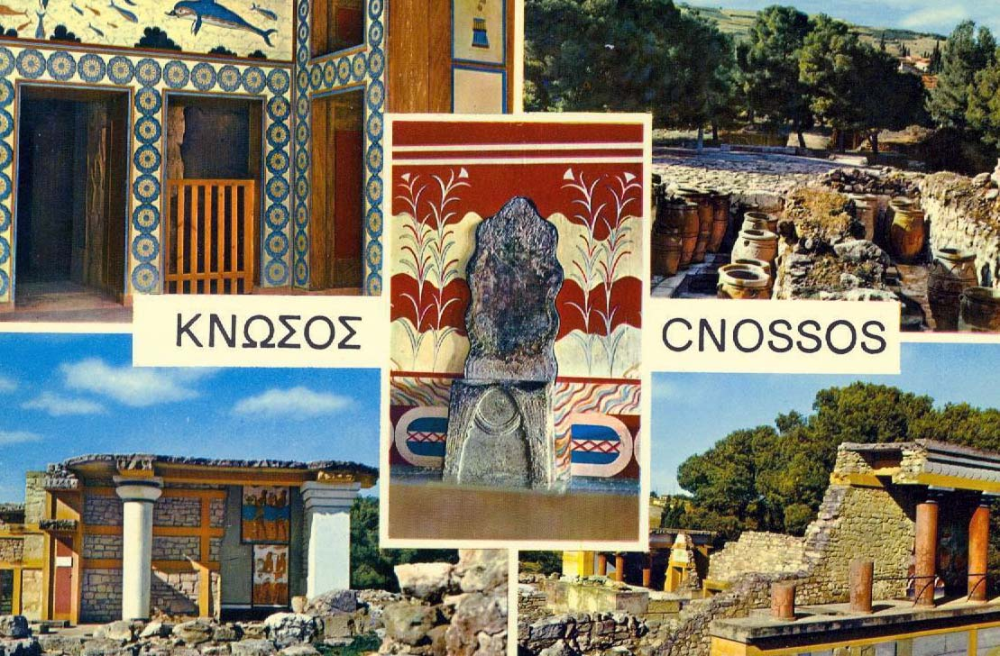
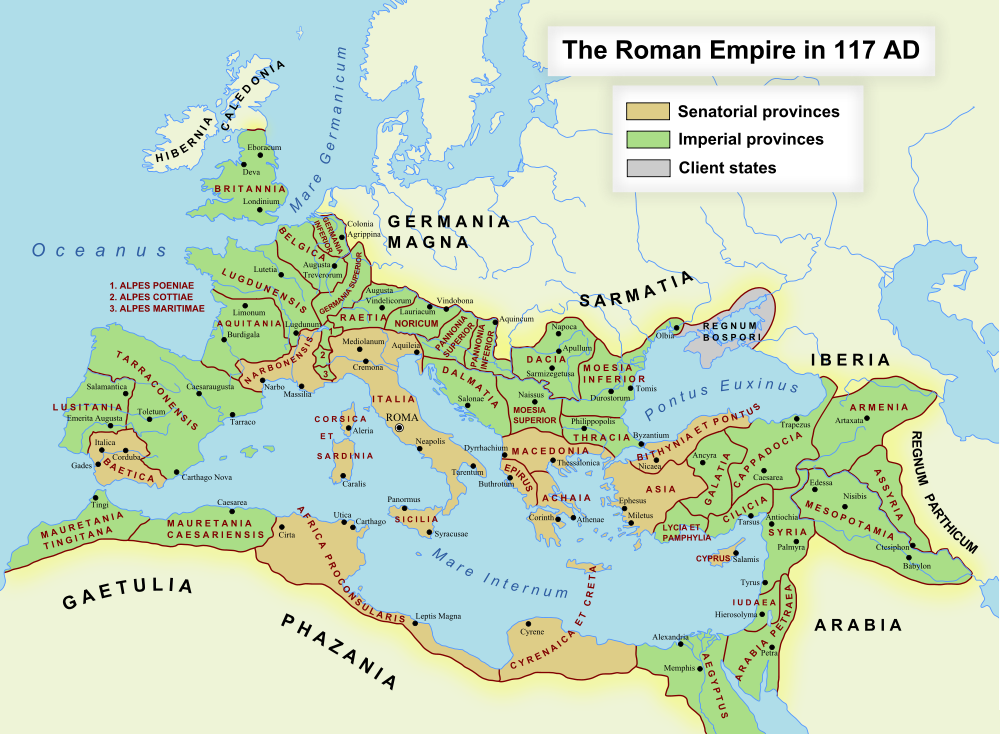
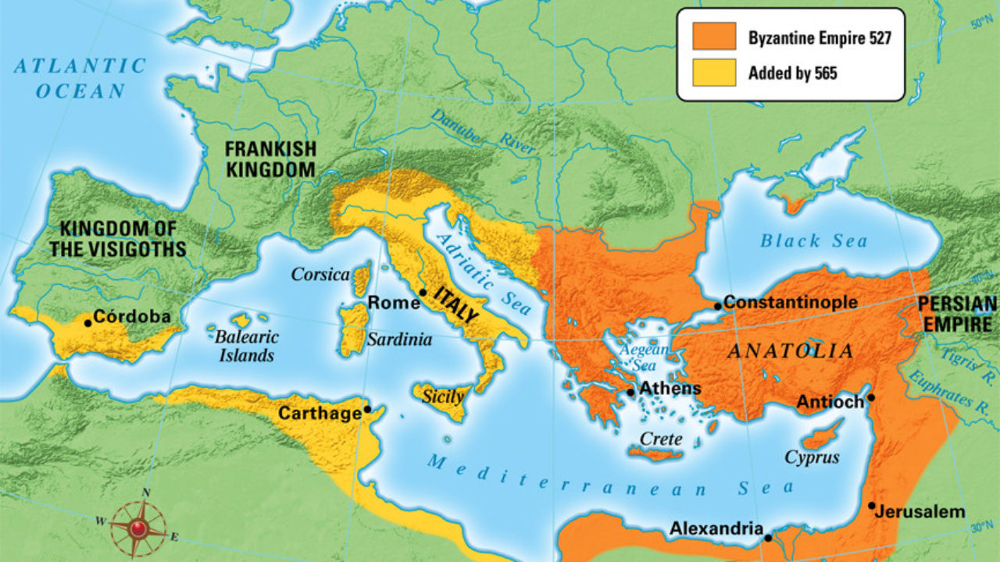
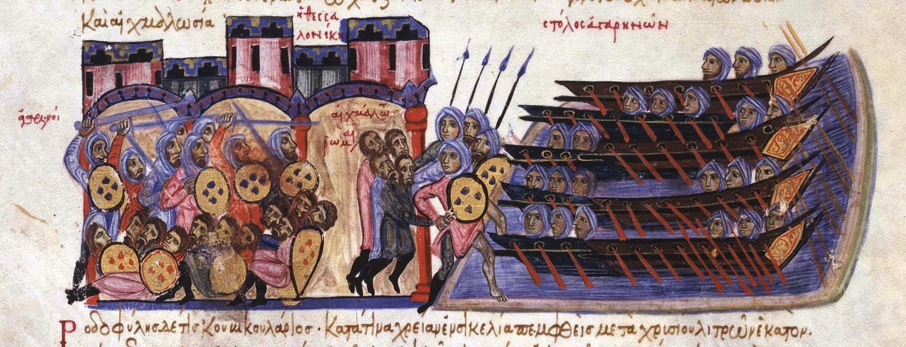
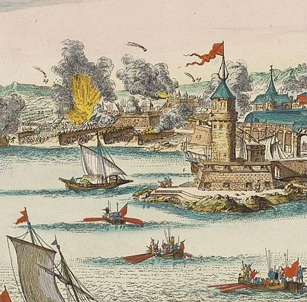

Ancient Civilizations
Minoan Civilization
Crete was the centre of Europe's first advanced civilization, the Minoan.This civilization wrote in the undeciphered script known as Linear A. Early Cretan history is replete with legends such as those of King Minos, Theseus and the Minotaur, passed on orally via poets such as Homer. The volcanic eruption of Thera may have been the cause of the downfall of the Minoan civilization.
Mycenaean Civilization
The Minoan civilization was overrun by the Mycenaean civilization from mainland Greece. The oldest samples of writing in the Greek language, as identified by Michael Ventris, is the Linear B archive from Knossos, dated approximately.

Roman + Byzantine Empire + Andalusian Arab Rule
Roman Rule
Crete was involved in the Mithridatic Wars. Nevertheless, a ferocious three-year campaign soon followed under Quintus Caecilius Metellus, equipped with three legions and Crete was finally conquered by Rome. Gortyn was made capital of the island, and Crete became a Roman province, along with Cyrenaica that was called Creta et Cyrenaica. Archaeological remains suggest that Crete under Roman rule witnessed prosperity and increased connectivity with other parts of the Empire. Some cities in Crete joined the Panhellenion, a league of Greek cities. When Diocletian redivided the Empire, Crete was placed, along with Cyrene, under the diocese of Moesia, and later by Constantine I to the diocese of Macedonia.

Byzantine Empire
Crete was separated from Cyrenaica. It remained a province within the eastern half of the Roman Empire, usually referred to as the Eastern Roman Empire after the establishment of a second capital in Constantinople. Crete was subjected to an attack by Vandals, the great earthquakes, a raid by Slavs and Arabs. Emperor Leo III transferred the island from the jurisdiction of the Pope to that of the Patriarchate of Constantinople.

Andalusian Arab Rule
Crete was captured by Andalusian Muwallads led by Abu Hafs, who established the Emirate of Crete. The Byzantines launched a campaign that took most of the island back in 842 and 843 under Theoktistos. Further Byzantine campaigns failed. Nikephoros Phokas' campaign completely restored Crete to the Byzantine Empire.

Venetian Rule and Ottoman Rule
Venetian Rule
During Venice's rule a Renaissance swept through the island. Known as The Cretan School or Post-Byzantine Art, it is among the last flowerings of the artistic traditions of the fallen empire. The most notable representatives of this Cretan renaissance were the painter El Greco, Nicholas Kalliakis, Georgios Kalafatis , Andreas Musalus and Vitsentzos Kornaros.Under the rule of the Catholic Venetians, the city of Candia was reputed to be the best fortified city of the Eastern Mediterranean. The three main forts were located at Gramvousa, Spinalonga, and Fortezza at Rethymnon. Other fortifications include the Kazarma fortress at Sitia. In 1492, Jews expelled from Spain settled on the island. Crete was under the rule of Giacomo Foscarini as Proveditor General, Sindace and Inquisitor.

Ottoman Rule
The Ottomans conquered Crete in 1669. Many Greek Cretans fled to other regions of the Republic of Venice after the Ottoman–Venetian Wars. Islamic presence on the island, aside from the interlude of the Arab occupation, was cemented by the Ottoman conquest.The island would be granted autonomy under Ottoman. With the break out of the First Balkan War, the Greek government declared that Crete was now Greek territory.